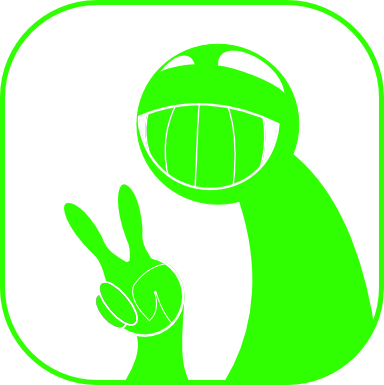

User Guide
Choose one of the five different icons to pick a specific level of facts that are scaled on "curseness" or better said, the value of the uncanniness of the facts.
You can either press the Random
to get a fact from a coincidental Fact Level or you select the level manually
by pressing on one of the icons and then confirming your choice with the
Submit.
The Submit button
will only apper after choosing an icon on the main page.
The levels in which the facts are divided are going as follows:
Level 1: Carefree

Easy going content
Most harmless and inoffensive facts that the entire site can offer.
Level 2: Curiouse
Less casual inforamtion .
These facts can be unusual, but should be bearable for most individuals.
Level 3: Astonishing
At least thought provoking
Perfect balance between tame and uncanny areas.
Level 4: Uncanny
Uncomfortable knowledge.
This Level is filled with facts that are more likely to make some readers uncomfortable or worring.
Level 5: Dreadful
//View the content on your own risk!//
The highest, triggering and most unhinged facts of this site are preserved at the final area.
Level [_]: Unknowen
It has only one single fact
There is nothing much known about it, besides it mostly resembling the websites logo and it having a chance of 1/6 chance to appear while selecting the
Random button.